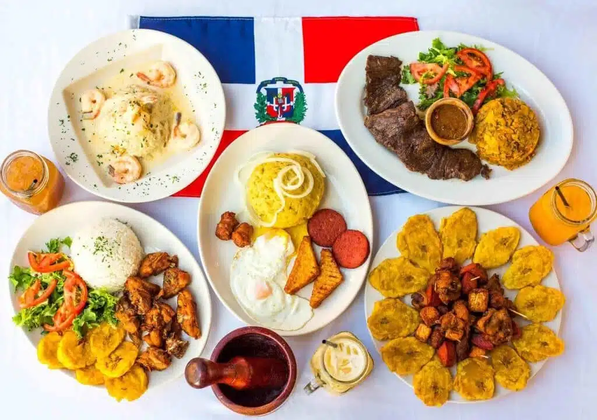

Get a taste of Dominican Republic!

Popular Dominican Dishes:
DOMINICAN BREAKFAST OF LOS TRES GOLPES CON MANGÚ
LA BANDERA DOMINICANA: NATIONAL TRADITIONAL LUNCH
SANCOCHO (MEAT AND ROOT VEGETABLES STEW)